Change analysis for Iraq for PRIMAP-hist v2.8_final compared to
v2.7_final
This changelog is published under the creative commons non-commercial
share alike license. For more information see creativecommons.org.
Overview over
emissions by sector and gas
The following figures show the aggregate national total emissions
excluding LULUCF AR6GWP100 for the country reported priority scenario.
The dotted lines show the v2.7_final data.
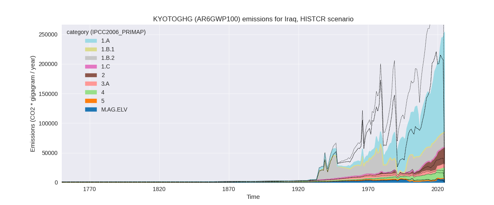
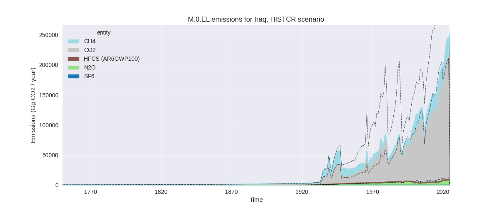
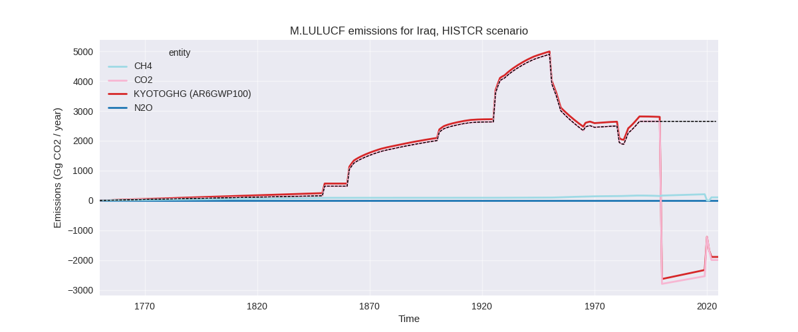
The following figures show the aggregate national total emissions
excluding LULUCF AR6GWP100 for the third party priority scenario. The
dotted lines show the v2.7_final data.
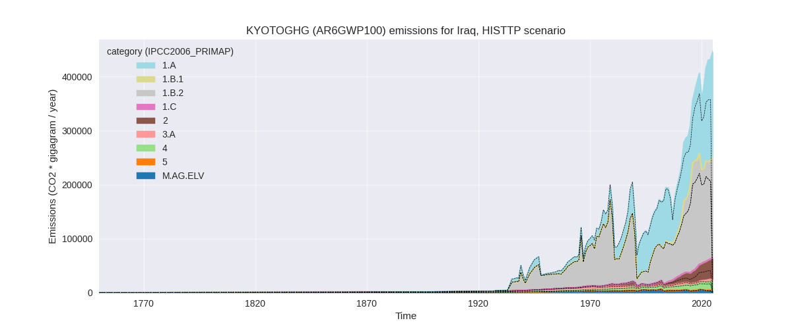
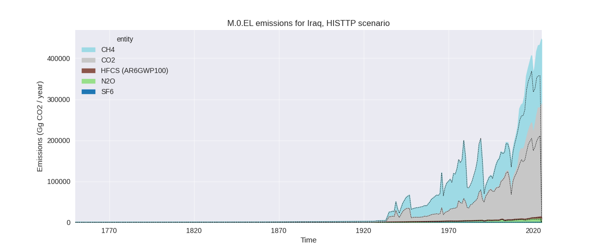
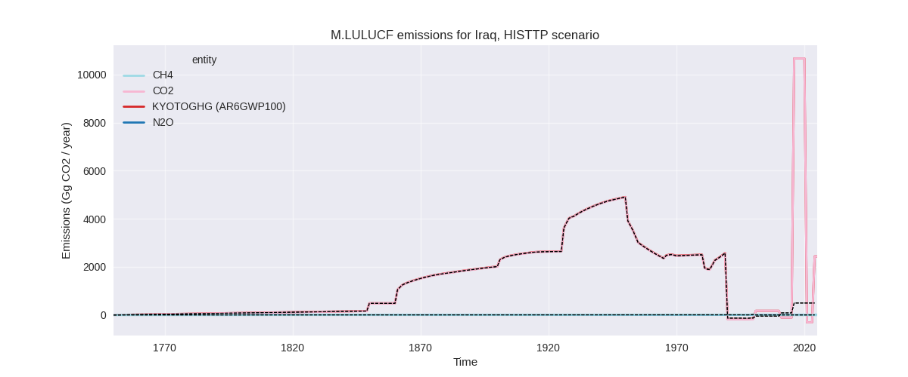
Used country reported data
The changelog with this information is available upon request for
non-commercial customers. Paying commercial customers will be provided
with the information.
Overview over changes
In the country reported priority scenario we have the following
changes for aggregate Kyoto GHG and national total emissions excluding
LULUCF (M.0.EL):
- Emissions in 2024 have changed by -31.5%% (-112703.11 Gg CO2 / year)
- Emissions in 1990-2024 have changed by -38.4%% (-81635.24 Gg CO2 / year)
In the third party priority scenario we have the following changes
for aggregate Kyoto GHG and national total emissions excluding LULUCF
(M.0.EL):
- Emissions in 2024 have changed by 20.8%% (74276.31 Gg CO2 / year)
- Emissions in 1990-2024 have changed by 8.2%% (17380.84 Gg CO2 / year)
Most
important changes per scenario and time frame
In the country reported priority scenario the
following sector-gas combinations have the highest absolute impact on
national total KyotoGHG (AR6GWP100) emissions in 2024
(up to 10 with either at least 0.2% impact on total emissions or at
least 20% change):
- 1: 1.B.2, CH4 with -116934.69 Gg CO2 / year (-89.8%, -32.7%)
- 2: 1.B.2, CO2 with -23457.23 Gg CO2 / year (-66.9%, -6.6%)
- 3: 2, CO2 with 12997.20 Gg CO2 / year (97.1%, 3.6%)
- 4: 1.A, CO2 with 9961.41 Gg CO2 / year (6.6%, 2.8%)
- 5: 2, HFCS (AR6GWP100) with -5120.68 Gg CO2 / year (-100.0%, -1.4%)
- 6: 4, CH4 with 3222.39 Gg CO2 / year (27.3%, 0.9%)
- 7: 3.A, CH4 with 2031.70 Gg CO2 / year (48.4%, 0.6%)
- 8: 4, CO2 with 1930.57 Gg CO2 / year (inf%, 0.5%)
- 9: M.AG.ELV, N2O with 1902.07 Gg CO2 / year (57.5%, 0.5%)
- 10: M.AG.ELV, CO2 with 289.34 Gg CO2 / year (inf%, 0.1%)
In the country reported priority scenario the
following sector-gas combinations have the highest absolute impact on
national total KyotoGHG (AR6GWP100) emissions in
1990-2024 (up to 10 with either at least 0.1% impact on
total emissions or at least 10% change):
- 1: 1.B.2, CH4 with -68765.73 Gg CO2 / year (-88.8%, -32.3%)
- 2: 1.A, CO2 with -11409.61 Gg CO2 / year (-12.2%, -5.4%)
- 3: 1.B.2, CO2 with -6387.88 Gg CO2 / year (-36.7%, -3.0%)
- 4: 2, CO2 with 5189.51 Gg CO2 / year (104.9%, 2.4%)
- 5: 2, HFCS (AR6GWP100) with -1658.71 Gg CO2 / year (-100.0%, -0.8%)
- 6: 3.A, CH4 with 1299.93 Gg CO2 / year (37.6%, 0.6%)
- 7: 4, CH4 with 1013.91 Gg CO2 / year (14.0%, 0.5%)
- 8: M.AG.ELV, CH4 with -583.90 Gg CO2 / year (-77.8%, -0.3%)
- 9: 4, CO2 with 209.85 Gg CO2 / year (inf%, 0.1%)
- 10: 2, SF6 with -162.90 Gg CO2 / year (-99.1%, -0.1%)
In the third party priority scenario the following
sector-gas combinations have the highest absolute impact on national
total KyotoGHG (AR6GWP100) emissions in 2024 (up to 10
with either at least 0.2% impact on total emissions or at least 20%
change):
- 1: 1.A, CO2 with 35972.63 Gg CO2 / year (24.0%, 10.1%)
- 2: 2, CO2 with 16520.19 Gg CO2 / year (123.4%, 4.6%)
- 3: 1.B.2, CO2 with 12181.48 Gg CO2 / year (34.7%, 3.4%)
- 4: 1.B.2, CH4 with 4810.22 Gg CO2 / year (3.7%, 1.3%)
- 5: 4, CO2 with 1930.57 Gg CO2 / year (inf%, 0.5%)
- 6: 4, CH4 with 1358.32 Gg CO2 / year (11.5%, 0.4%)
- 7: M.AG.ELV, CH4 with 361.27 Gg CO2 / year (inf%, 0.1%)
- 8: 5, N2O with 240.12 Gg CO2 / year (38.7%, 0.1%)
- 9: 1.A, N2O with 170.96 Gg CO2 / year (33.4%, 0.0%)
In the third party priority scenario the following
sector-gas combinations have the highest absolute impact on national
total KyotoGHG (AR6GWP100) emissions in 1990-2024 (up
to 10 with either at least 0.1% impact on total emissions or at least
10% change):
- 1: 1.B.2, CO2 with 6529.96 Gg CO2 / year (37.5%, 3.1%)
- 2: 2, CO2 with 6136.68 Gg CO2 / year (124.1%, 2.9%)
- 3: 1.A, CO2 with 4096.65 Gg CO2 / year (4.4%, 1.9%)
- 4: 4, CO2 with 209.85 Gg CO2 / year (inf%, 0.1%)
Notes on data changes
The changelog with this information is available upon request for
non-commercial customers. Paying commercial customers will be provided
with the information.
Changes by sector and gas
For each scenario and time frame the changes are displayed for all
individual sectors and all individual gases. In the sector plot we use
aggregate Kyoto GHGs in AR6GWP100. In the gas plot we usenational total
emissions without LULUCF.
country reported scenario
2024
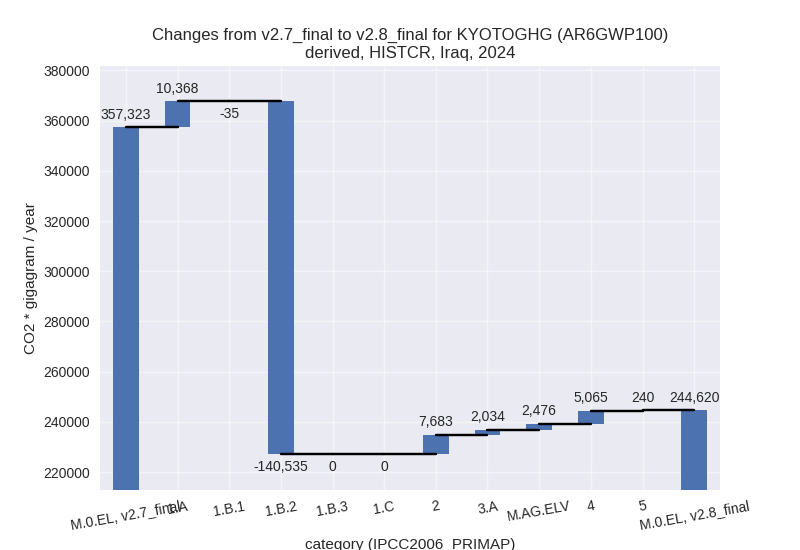
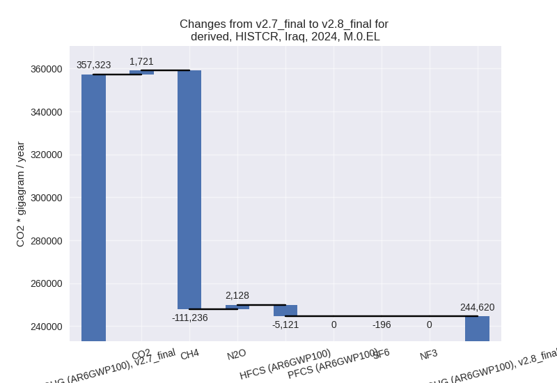
1990-2024
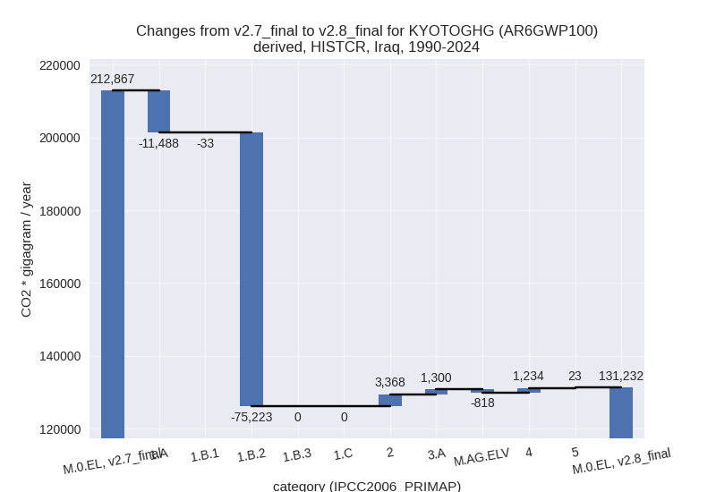
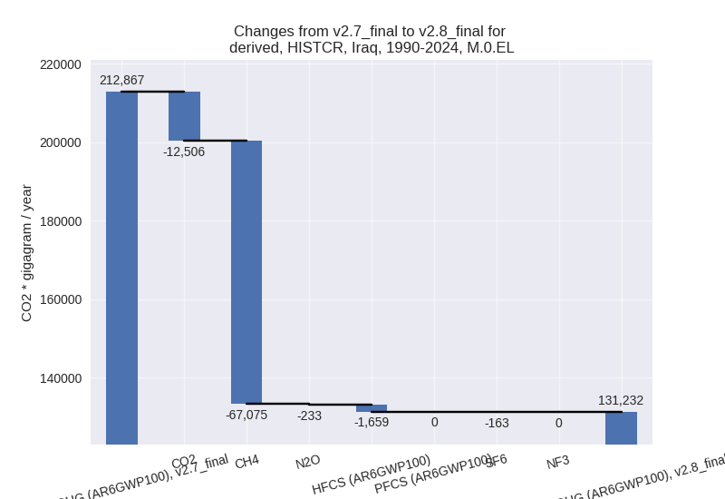
third party scenario
2024
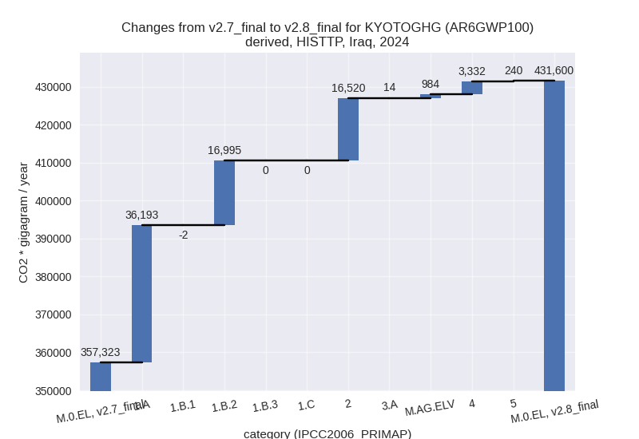
1990-2024
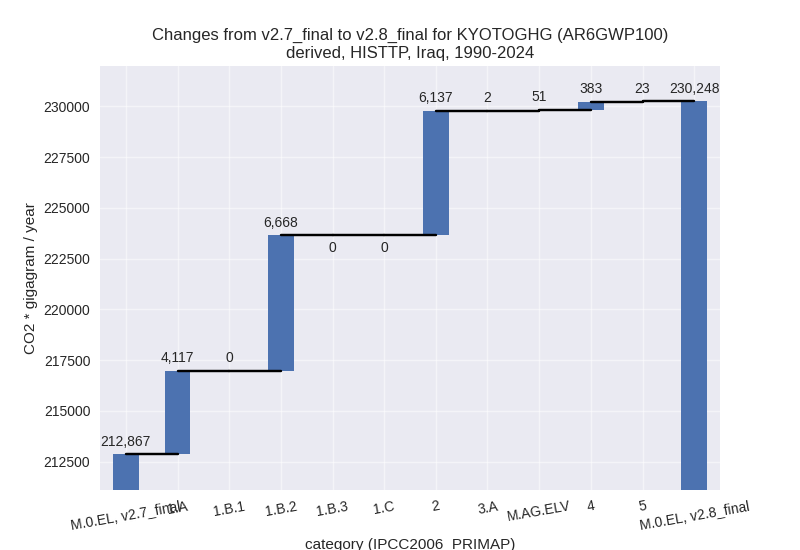
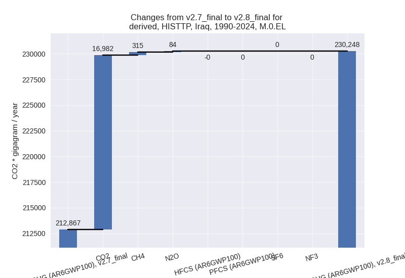
Detailed changes for the
scenarios:
country reported scenario
(HISTCR):
Most important changes
per time frame
For 2024 the following sector-gas combinations have
the highest absolute impact on national total KyotoGHG (AR6GWP100)
emissions in 2024 (up to 20 with either at least 0.2%
impact on total emissions or at least 20% change):
- 1: 1.B.2, CH4 with -116934.69 Gg CO2 / year (-89.8%), -32.7%)
- 2: 1.B.2, CO2 with -23457.23 Gg CO2 / year (-66.9%), -6.6%)
- 3: 2, CO2 with 12997.20 Gg CO2 / year (97.1%), 3.6%)
- 4: 1.A, CO2 with 9961.41 Gg CO2 / year (6.6%), 2.8%)
- 5: 2, HFCS (AR6GWP100) with -5120.68 Gg CO2 / year (-100.0%), -1.4%)
- 6: 4, CH4 with 3222.39 Gg CO2 / year (27.3%), 0.9%)
- 7: 3.A, CH4 with 2031.70 Gg CO2 / year (48.4%), 0.6%)
- 8: 4, CO2 with 1930.57 Gg CO2 / year (inf%), 0.5%)
- 9: M.AG.ELV, N2O with 1902.07 Gg CO2 / year (57.5%), 0.5%)
- 10: M.AG.ELV, CO2 with 289.34 Gg CO2 / year (inf%), 0.1%)
- 11: M.AG.ELV, CH4 with 284.60 Gg CO2 / year (inf%), 0.1%)
- 12: 5, N2O with 240.12 Gg CO2 / year (38.7%), 0.1%)
- 13: 1.A, N2O with 212.58 Gg CO2 / year (41.6%), 0.1%)
- 14: 2, SF6 with -195.58 Gg CO2 / year (-100.0%), -0.1%)
- 15: 1.A, CH4 with 194.13 Gg CO2 / year (67.7%), 0.1%)
- 16: 1.B.2, N2O with -142.78 Gg CO2 / year (-99.9%), -0.0%)
- 17: 1.B.1, CH4 with -34.61 Gg CO2 / year (-58.9%), -0.0%)
For 1990-2024 the following sector-gas combinations
have the highest absolute impact on national total KyotoGHG (AR6GWP100)
emissions in 1990-2024 (up to 20 with either at least
0.1% impact on total emissions or at least 10% change):
- 1: 1.B.2, CH4 with -68765.73 Gg CO2 / year (-88.8%), -32.3%)
- 2: 1.A, CO2 with -11409.61 Gg CO2 / year (-12.2%), -5.4%)
- 3: 1.B.2, CO2 with -6387.88 Gg CO2 / year (-36.7%), -3.0%)
- 4: 2, CO2 with 5189.51 Gg CO2 / year (104.9%), 2.4%)
- 5: 2, HFCS (AR6GWP100) with -1658.71 Gg CO2 / year (-100.0%), -0.8%)
- 6: 3.A, CH4 with 1299.93 Gg CO2 / year (37.6%), 0.6%)
- 7: 4, CH4 with 1013.91 Gg CO2 / year (14.0%), 0.5%)
- 8: M.AG.ELV, CH4 with -583.90 Gg CO2 / year (-77.8%), -0.3%)
- 9: 4, CO2 with 209.85 Gg CO2 / year (inf%), 0.1%)
- 10: 2, SF6 with -162.90 Gg CO2 / year (-99.1%), -0.1%)
- 11: M.AG.ELV, CO2 with -107.43 Gg CO2 / year (-37.6%), -0.1%)
- 12: 1.A, N2O with -72.27 Gg CO2 / year (-17.7%), -0.0%)
- 13: 1.B.2, N2O with -68.96 Gg CO2 / year (-86.2%), -0.0%)
- 14: 1.B.1, CH4 with -32.91 Gg CO2 / year (-77.7%), -0.0%)
Changes in the main sectors for aggregate KyotoGHG (AR6GWP100)
are
- 1: Total sectoral emissions in 2022 are 173302.61
Gg CO2 / year which is 75.9% of M.0.EL emissions. 2024 Emissions have
changed by -41.2% (-130201.20 Gg CO2
/ year). 1990-2024 Emissions have changed by -45.9% (-86743.34 Gg CO2 / year). For 2024
the changes per gas
are:
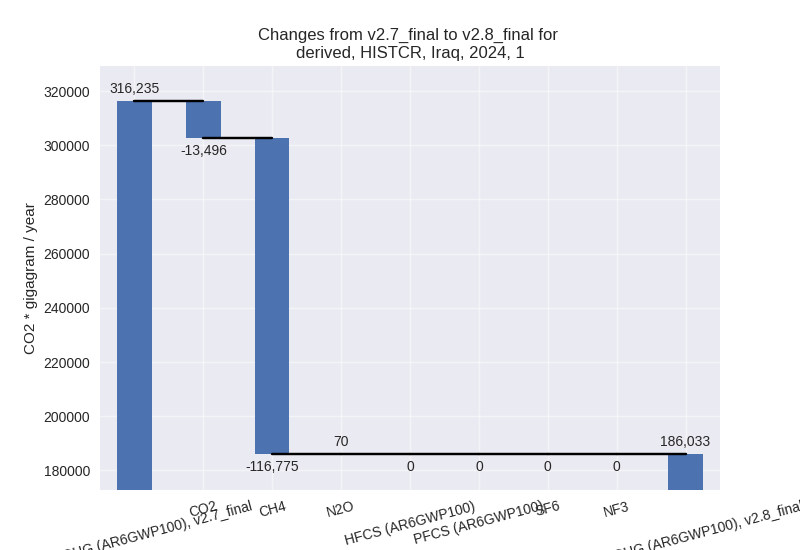
For 1990-2024 the changes per gas
are:
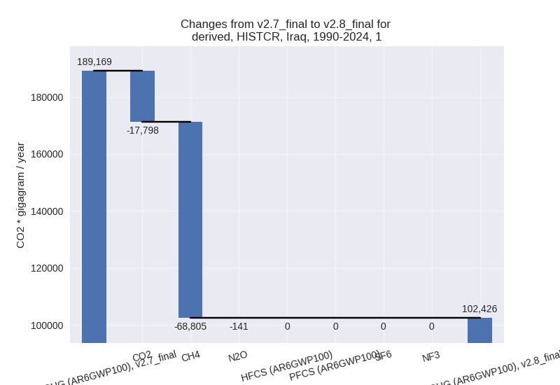
The changes come from the following subsectors:
- 1.A: Total sectoral emissions in 2022 are 147883.14
Gg CO2 / year which is 85.3% of category 1 emissions. 2024 Emissions
have changed by 6.9% (10368.13 Gg
CO2 / year). 1990-2024 Emissions have changed by -12.2% (-11487.85 Gg CO2 / year). For 2024
the changes per gas
are:
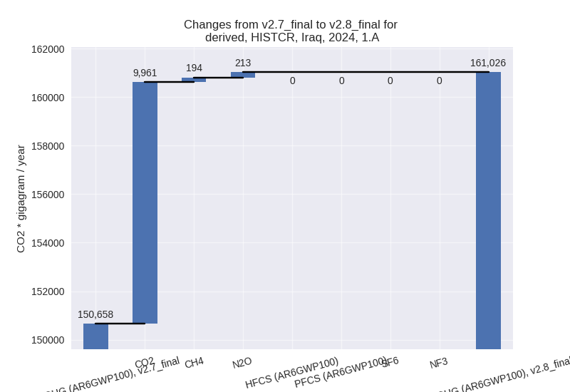
For 1990-2024 the changes per gas
are:
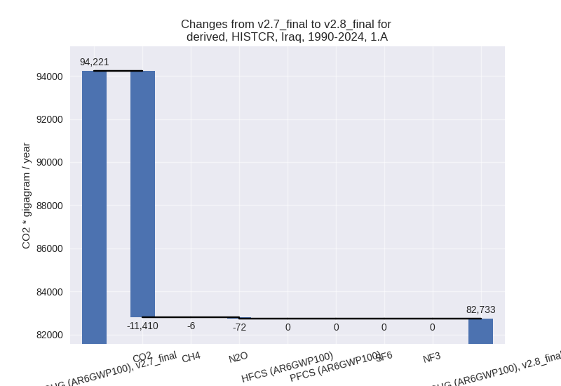
There is no subsector information available in PRIMAP-hist.
- 1.B.1: Total sectoral emissions in 2022 are 24.95
Gg CO2 / year which is 0.0% of category 1 emissions. 2024 Emissions have
changed by -58.1% (-34.63 Gg CO2 /
year). 1990-2024 Emissions have changed by -76.7% (-32.91 Gg CO2 / year). For 2024
the changes per gas
are:
For 1990-2024 the changes per gas
are:
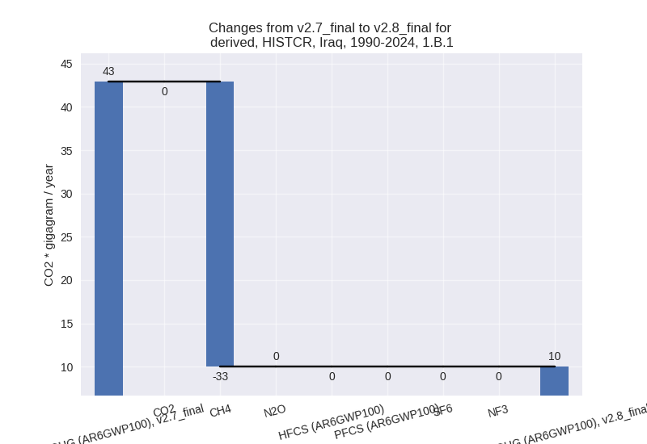
There is no subsector information available in PRIMAP-hist.
- 1.B.2: Total sectoral emissions in 2022 are
25394.52 Gg CO2 / year which is 14.7% of category 1 emissions. 2024
Emissions have changed by -84.9%
(-140534.70 Gg CO2 / year). 1990-2024 Emissions have changed by -79.3% (-75222.58 Gg CO2 / year). For 2024
the changes per gas
are:
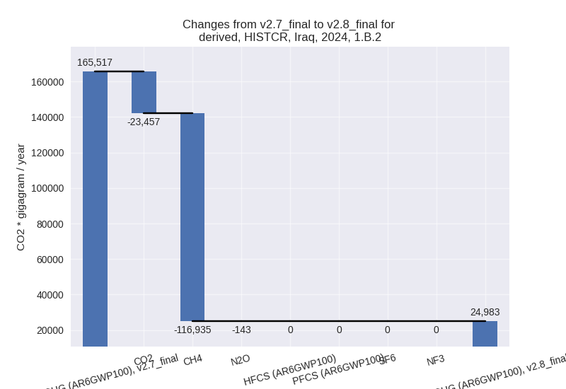
For 1990-2024 the changes per gas
are:
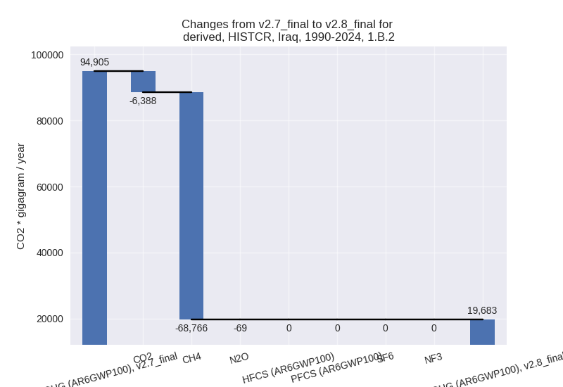
There is no subsector information available in PRIMAP-hist.
- 2: Total sectoral emissions in 2022 are 26791.11 Gg
CO2 / year which is 11.7% of M.0.EL emissions. 2024 Emissions have
changed by 37.3% (7683.19 Gg CO2 /
year). 1990-2024 Emissions have changed by 42.1% (3367.96 Gg CO2 / year). For 2024
the changes per gas
are:
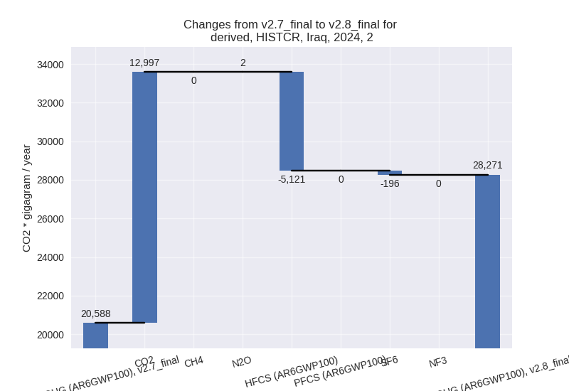
For 1990-2024 the changes per gas
are:
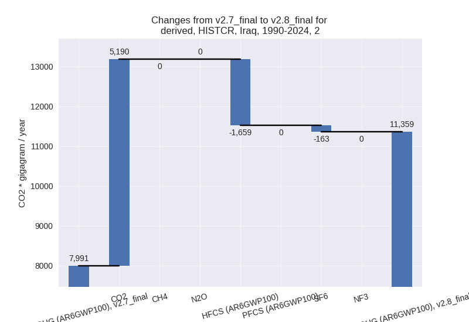
- M.AG: Total sectoral emissions in 2022 are 11461.01
Gg CO2 / year which is 5.0% of M.0.EL emissions. 2024 Emissions have
changed by 59.6% (4509.76 Gg CO2 /
year). 1990-2024 Emissions have changed by 6.3% (482.83 Gg CO2 / year). For 2024 the
changes per gas
are:
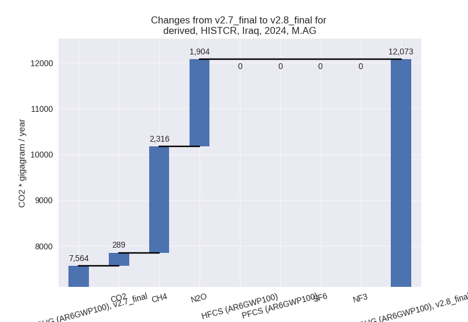
For 1990-2024 the changes per gas
are:
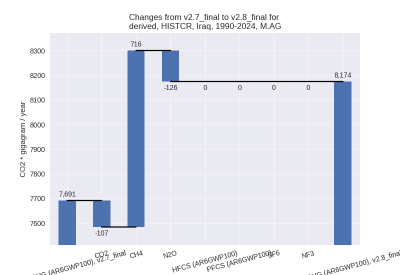
The changes come from the following subsectors:
- 3.A: Total sectoral emissions in 2022 are 6061.03
Gg CO2 / year which is 52.9% of category M.AG emissions. 2024 Emissions
have changed by 47.8% (2033.74 Gg
CO2 / year). 1990-2024 Emissions have changed by 37.3% (1300.38 Gg CO2 / year). For 2024
the changes per gas
are:
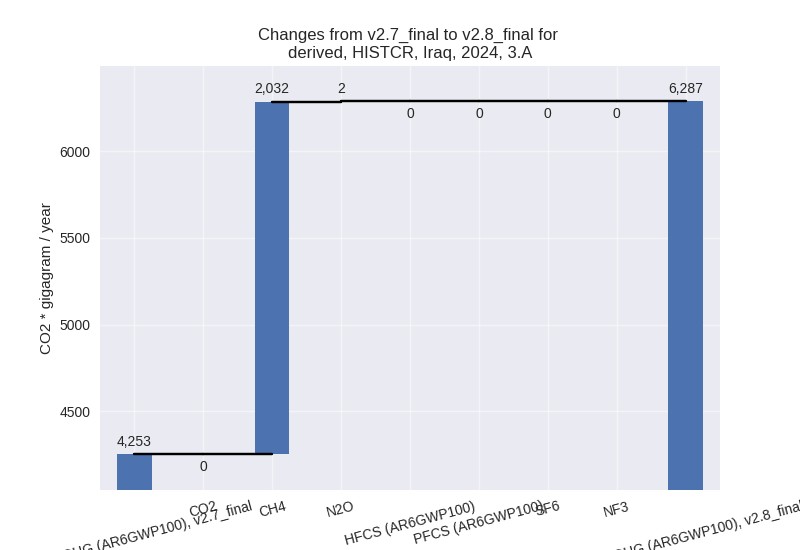
For 1990-2024 the changes per gas
are:
There is no subsector information available in PRIMAP-hist.
- M.AG.ELV: Total sectoral emissions in 2022 are
5399.97 Gg CO2 / year which is 47.1% of category M.AG emissions. 2024
Emissions have changed by 74.8%
(2476.02 Gg CO2 / year). 1990-2024 Emissions have changed by -19.4% (-817.55 Gg CO2 / year). For 2024
the changes per gas
are:
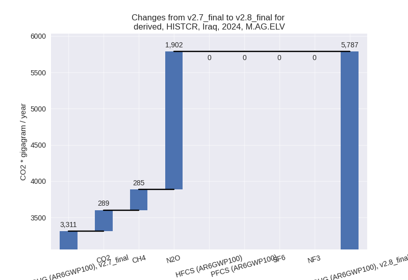
For 1990-2024 the changes per gas
are:
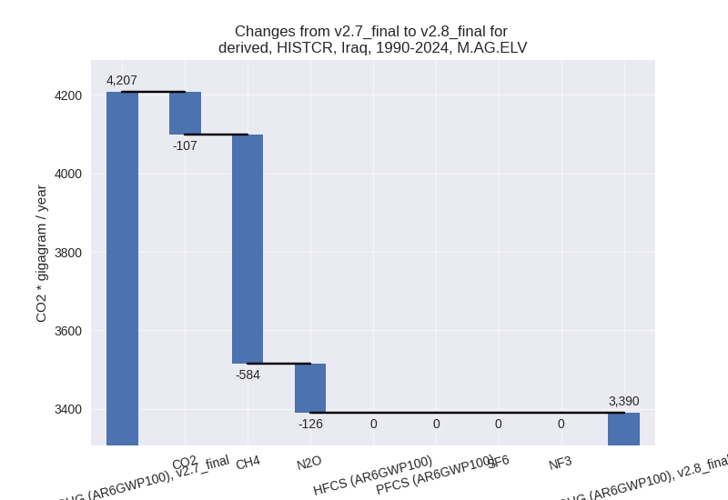
There is no subsector information available in PRIMAP-hist.
- 4: Total sectoral emissions in 2022 are 15990.08 Gg
CO2 / year which is 7.0% of M.0.EL emissions. 2024 Emissions have
changed by 41.1% (5065.02 Gg CO2 /
year). 1990-2024 Emissions have changed by 16.4% (1234.32 Gg CO2 / year). For 2024
the changes per gas
are:
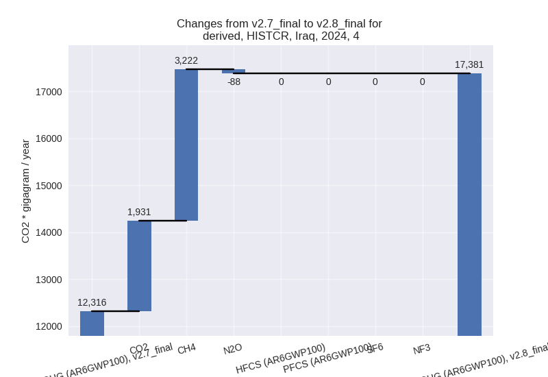
For 1990-2024 the changes per gas
are:
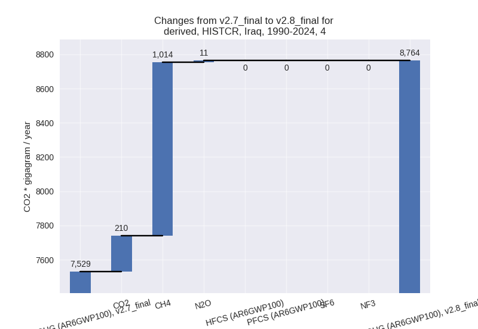
- 5: Total sectoral emissions in 2022 are 777.56 Gg
CO2 / year which is 0.3% of M.0.EL emissions. 2024 Emissions have
changed by 38.7% (240.12 Gg CO2 /
year). 1990-2024 Emissions have changed by 4.7% (23.00 Gg CO2 / year). For 2024 the
changes per gas
are:
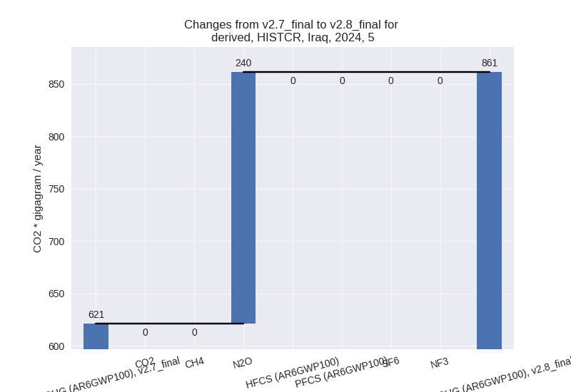
For 1990-2024 the changes per gas
are:
third party scenario (HISTTP):
Most important changes
per time frame
For 2024 the following sector-gas combinations have
the highest absolute impact on national total KyotoGHG (AR6GWP100)
emissions in 2024 (up to 20 with either at least 0.2%
impact on total emissions or at least 20% change):
- 1: 1.A, CO2 with 35972.63 Gg CO2 / year (24.0%), 10.1%)
- 2: 2, CO2 with 16520.19 Gg CO2 / year (123.4%), 4.6%)
- 3: 1.B.2, CO2 with 12181.48 Gg CO2 / year (34.7%), 3.4%)
- 4: 1.B.2, CH4 with 4810.22 Gg CO2 / year (3.7%), 1.3%)
- 5: 4, CO2 with 1930.57 Gg CO2 / year (inf%), 0.5%)
- 6: 4, CH4 with 1358.32 Gg CO2 / year (11.5%), 0.4%)
- 7: M.AG.ELV, CH4 with 361.27 Gg CO2 / year (inf%), 0.1%)
- 8: 5, N2O with 240.12 Gg CO2 / year (38.7%), 0.1%)
- 9: 1.A, N2O with 170.96 Gg CO2 / year (33.4%), 0.0%)
- 10: M.AG.ELV, CO2 with 122.78 Gg CO2 / year (inf%), 0.0%)
For 1990-2024 the following sector-gas combinations
have the highest absolute impact on national total KyotoGHG (AR6GWP100)
emissions in 1990-2024 (up to 20 with either at least
0.1% impact on total emissions or at least 10% change):
- 1: 1.B.2, CO2 with 6529.96 Gg CO2 / year (37.5%), 3.1%)
- 2: 2, CO2 with 6136.68 Gg CO2 / year (124.1%), 2.9%)
- 3: 1.A, CO2 with 4096.65 Gg CO2 / year (4.4%), 1.9%)
- 4: 4, CO2 with 209.85 Gg CO2 / year (inf%), 0.1%)
Changes in the main sectors for aggregate KyotoGHG (AR6GWP100)
are
- 1: Total sectoral emissions in 2022 are 358268.10
Gg CO2 / year which is 86.1% of M.0.EL emissions. 2024 Emissions have
changed by 16.8% (53186.85 Gg CO2 /
year). 1990-2024 Emissions have changed by 5.7% (10785.25 Gg CO2 / year). For 2024
the changes per gas
are:
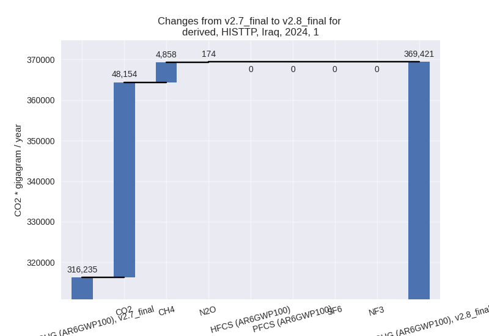
For 1990-2024 the changes per gas
are:
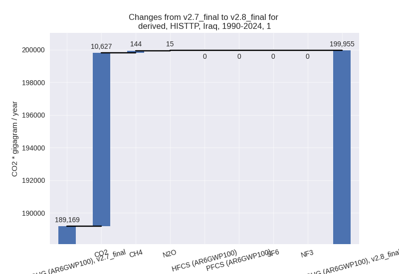
The changes come from the following subsectors:
- 1.A: Total sectoral emissions in 2022 are 171601.14
Gg CO2 / year which is 47.9% of category 1 emissions. 2024 Emissions
have changed by 24.0% (36193.25 Gg
CO2 / year). 1990-2024 Emissions have changed by 4.4% (4117.40 Gg CO2 / year). For 2024 the
changes per gas
are:
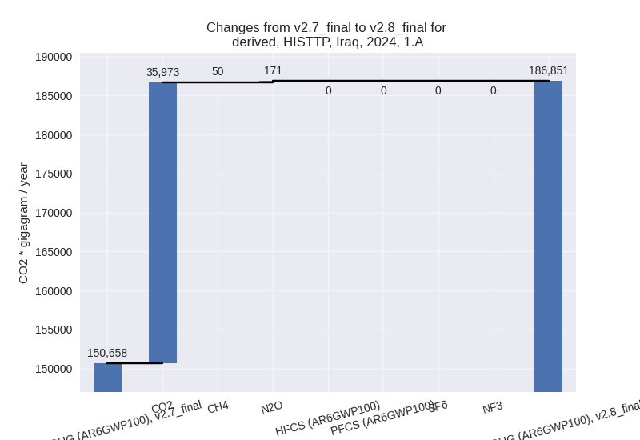
For 1990-2024 the changes per gas
are:
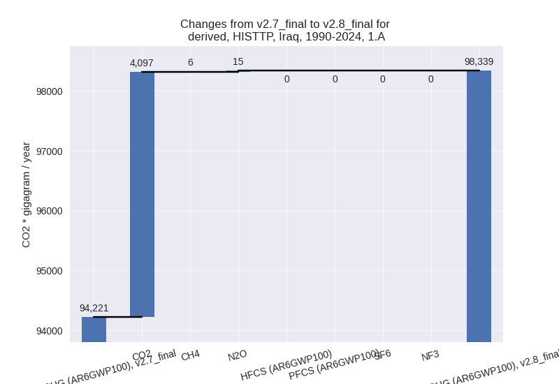
There is no subsector information available in PRIMAP-hist.
- 1.B.1: Total sectoral emissions in 2022 are 58.07
Gg CO2 / year which is 0.0% of category 1 emissions. 2024 Emissions have
changed by -2.5% (-1.51 Gg CO2 /
year). 1990-2024 Emissions have changed by 0.0% (0.00 Gg CO2 / year). For 2024 the
changes per gas
are:
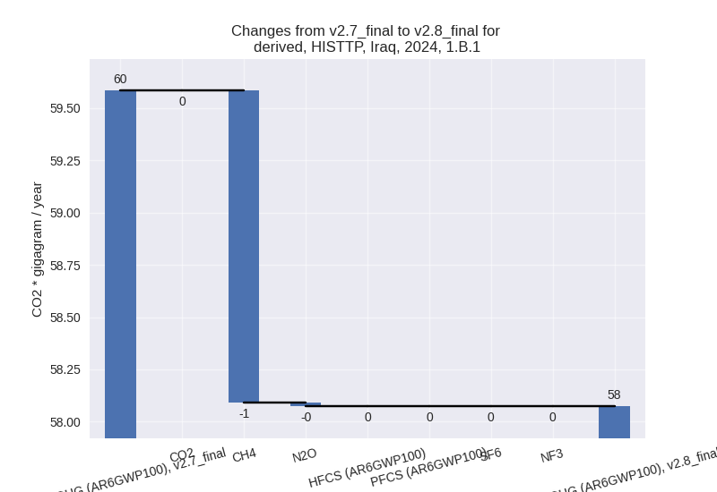
There is no subsector information available in PRIMAP-hist.
- 1.B.2: Total sectoral emissions in 2022 are
186608.89 Gg CO2 / year which is 52.1% of category 1 emissions. 2024
Emissions have changed by 10.3%
(16995.12 Gg CO2 / year). 1990-2024 Emissions have changed by 7.0% (6667.84 Gg CO2 / year). For 2024 the
changes per gas
are:
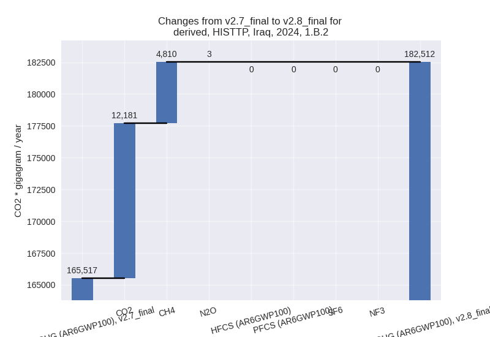
For 1990-2024 the changes per gas
are:
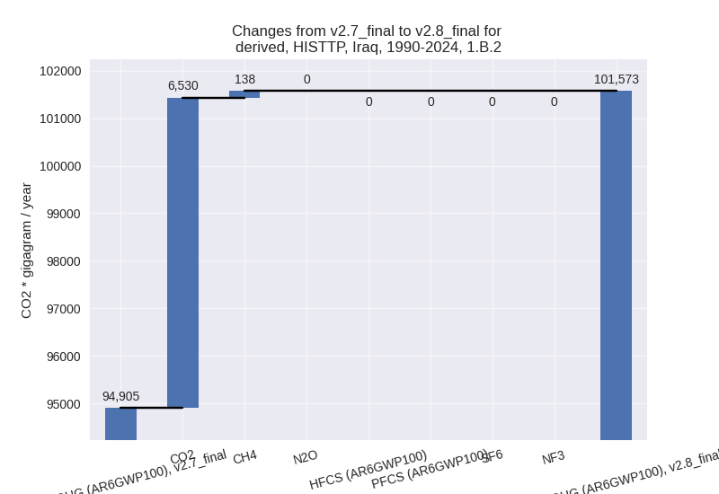
There is no subsector information available in PRIMAP-hist.
- 2: Total sectoral emissions in 2022 are 34628.19 Gg
CO2 / year which is 8.3% of M.0.EL emissions. 2024 Emissions have
changed by 80.2% (16520.35 Gg CO2 /
year). 1990-2024 Emissions have changed by 76.8% (6136.68 Gg CO2 / year). For 2024
the changes per gas
are:
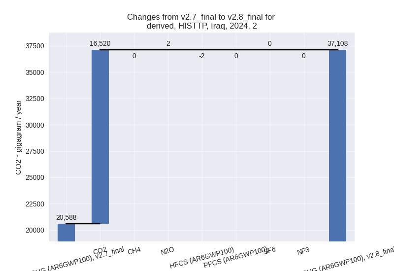
For 1990-2024 the changes per gas
are:
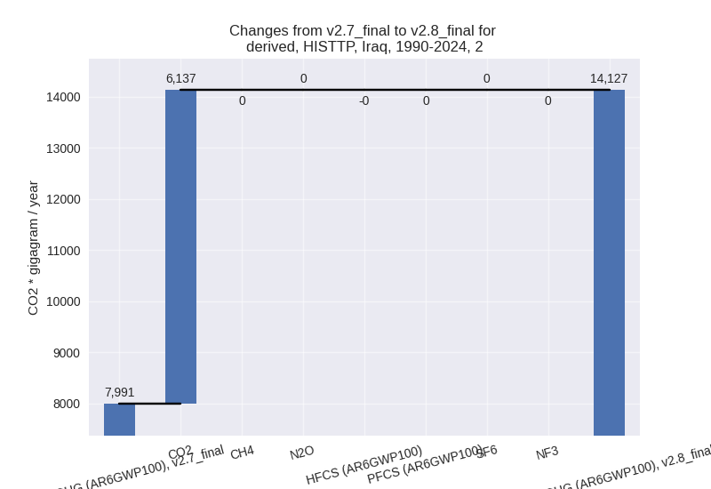
- M.AG: Total sectoral emissions in 2022 are 7983.74
Gg CO2 / year which is 1.9% of M.0.EL emissions. 2024 Emissions have
changed by 13.2% (997.36 Gg CO2 /
year). 1990-2024 Emissions have changed by 0.7% (52.76 Gg CO2 / year). For 2024 the
changes per gas
are:
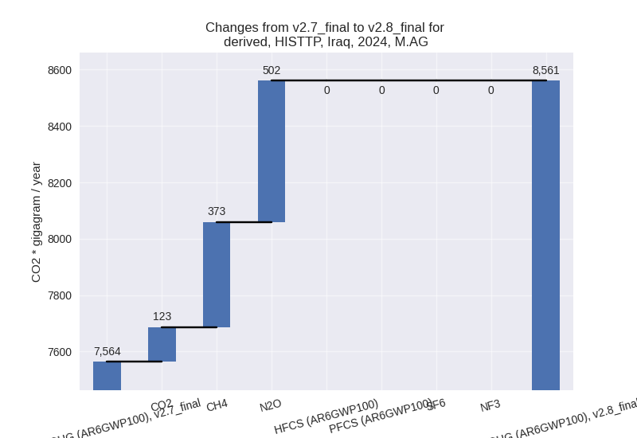
The changes come from the following subsectors:
- 3.A: Total sectoral emissions in 2022 are 4114.06
Gg CO2 / year which is 51.5% of category M.AG emissions. 2024 Emissions
have changed by 0.3% (13.74 Gg CO2 /
year). 1990-2024 Emissions have changed by 0.1% (1.89 Gg CO2 / year).
- M.AG.ELV: Total sectoral emissions in 2022 are
3869.67 Gg CO2 / year which is 48.5% of category M.AG emissions. 2024
Emissions have changed by 29.7%
(983.62 Gg CO2 / year). 1990-2024 Emissions have changed by 1.2% (50.86 Gg CO2 / year). For 2024 the
changes per gas
are:
There is no subsector information available in PRIMAP-hist.
- 4: Total sectoral emissions in 2022 are 14344.92 Gg
CO2 / year which is 3.4% of M.0.EL emissions. 2024 Emissions have
changed by 27.1% (3331.62 Gg CO2 /
year). 1990-2024 Emissions have changed by 5.1% (383.16 Gg CO2 / year). For 2024 the
changes per gas
are:
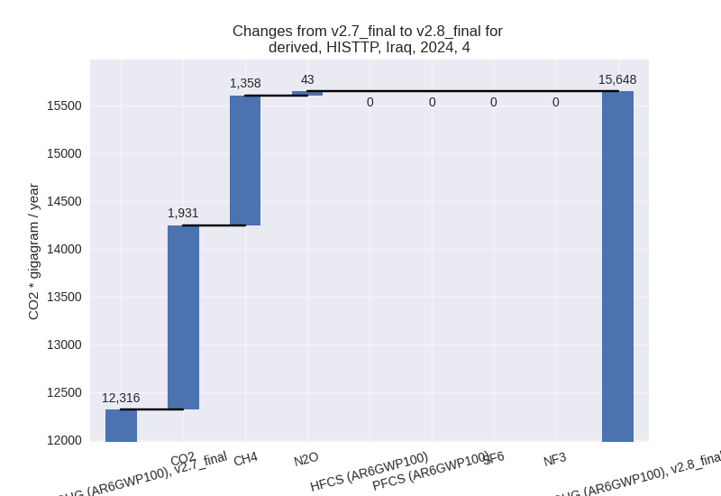
For 1990-2024 the changes per gas
are:
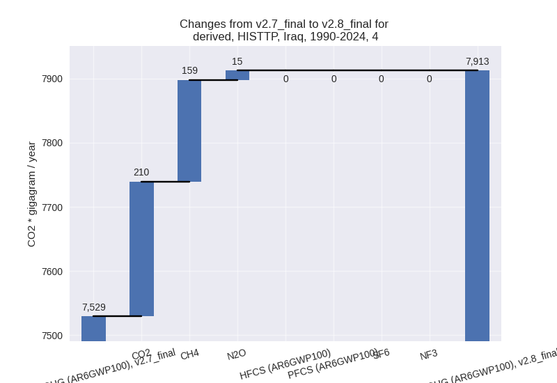
- 5: Total sectoral emissions in 2022 are 777.56 Gg
CO2 / year which is 0.2% of M.0.EL emissions. 2024 Emissions have
changed by 38.7% (240.12 Gg CO2 /
year). 1990-2024 Emissions have changed by 4.7% (23.00 Gg CO2 / year). For 2024 the
changes per gas
are:
For 1990-2024 the changes per gas
are: